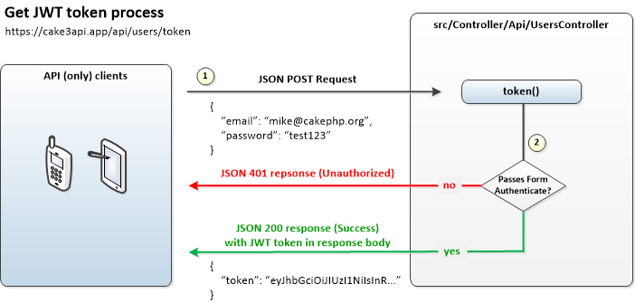

Camille FOURMAINTRAUX
Étudiant en BUT Informatique

Étudiant en BUT Informatique
A la manière de prendreunrendezvous, de Doctolib ou de nombreux sites de prise de rendez-vous mis en place durant la crise COVID-19, l’objectif de ce projet consiste à réaliser un site internet de gestion de rendez-vous multi-utilisateurs. Le site permet d’une part de montrer aux utilisateurs les créneaux libres, d’autre part de permettre aux utilisateurs de saisir et gérer leurs rendez-vous, et évidemment de n’autoriser des rendez-vous que s’ils respectent les contraintes souhaitées. Le site s'appuie donc sur de nombreux paramètres permettant l’expression de contraintes afin de pouvoir être adapté à toutes les situations. Par exemple le planning de réservation des créneaux de piscine (avec la contrainte “pas plus de 30 personnes par heure”) ou le planning de réservation de créneaux chez le médecin (avec la contrainte “pas plus d’1 personne toutes les 15mn”).

Spring est un framework open source pour construire et définir l'infrastructure d'une application Java, dont il facilite le développement et les tests. Spring Boot est un framework Java open source utilisé pour programmer des applications Spring autonomes de qualité production avec un ensemble de bibliothèques qui facilitent le démarrage et la gestion des projets. Grâce a ce projet, nous avons appris à utiliser le framework java back-end Spring, ainsi que Spring Security. Spring Security est un framework Java/Java EE qui fournit des fonctionnalités d'authentification, d'autorisation et d'autres fonctionnalités de sécurité pour les applications d'entreprise. Notre projet ne contenat que deux rôle : User et Admin. Un admin peut faire tout ce qu'un utilisateur connecté (User) peut faire, mais aussi accéder et modifier les rendez-vous des autres utilisateurs.

Dans le cadre de cette SAÉ, nous avons été confrontés au développement d’un logiciel qui sort du périmètre dans lequel nous avions l’habitude d’évoluer. Nous avons développer un logiciel permettant d’émuler un ordinateur basé sur un processeur RISC-V, en utilisant le langage de programmation de notre choix. En raison des contraintes de performance liée au développement d’un émulateur, il était préférable de choisir un langage qui se compile vers du code natif, par exemple C, C++, Rust ou encore Go. Après avoir regardé ces différents lanaguages, particulièrement le RUST, nous avons décidé de coder l'émulateur en C.

L’émulation est le fait de simuler le fonctionnement d’une architecture matérielle à l’aide d’un programme informatique. Le programme est en charge de modéliser et de faire évoluer l’état « virtuel » de l’architecture matérielle. Le logiciel d’émulation doit donc proposer une structure de données qui représente le matériel que l’on cherche à simuler et faire évoluer ces données au fur-et-à-mesure de l’avancée de la simulation. Les registres sont les plus petites unités de stockage du processeur. Ils sont intégrés à celui-ci et n’ont pas d’adresse car il ne sont pas en mémoire. Il sont directement utilisables dans les instructions machine et servent de stockage de traitement. L’unité arithmétique et logique travaille exclusivement avec eux sur la plupart des architectures.

Nous avons reçu un cahier des charges, avec toutes les fonctionnalités minimales que devrais avoir l'application finale. Notre première mission était donc de réfléchir à des éléments de gameplay ainsi qu'à un thème permettant de répondre aux consignes. Nous nous sommes d'abord concentré sur les éléments de gameplay, en fournissant deux versions prototypes sans aucun thèmes ou élément audio visuel, uniquement une base de gameplay et des formes géométriques pour répresenter les élements du jeu.

C'était la première fois que nous devions développer un jeu multijoueur, ce fut un défi très intéressant et cela nous à fait réfléchir et comprendre à comment fonctionnent les jeux multijoueurs en général. Grâce à cette saé, nous avons appris à utiliser socket.iio pour connecter le server et les clients entre eux, et permettre la création de différentes parties indépendantes sur le même serveur grâce aux rooms.

Cette saé portait sur réaliser un site web d'une pizzeria 'Pizzeria Mazzorello' respectant l'architecture REST. Il devait donc y'avoir plusieurs end-points afin de permettre à des utilisateurs externes de récupérer les données et de les modifier dans la base de données. Les end-points étaient les suivants :

Mise en place de différents système d'authentification notamment API Token et JWT token.
On nous avait simplement donné des instructions de gameplay et quelques interfaces et nous devions, à partir de cela, concevoir tout le jeu. Ce jeu se joue à deux joueurs, un monstre et un chasseur. Le monstre gagne s'il arrive à s'enfuir et le chasseur gagne s'il arrive à tirer sur le monstre avant que celui-ci arrive à s'enfuir. Pas de version textuelle, cettte application était à réaliser entièrement en javaFx dès le début.

Durant cette saé, les professeurs ont particulièrement insisté sur la pertinence des tests et de la documentation que nous devons fournir. Ce projet fut donc l'occasion de nous apprendre à faire des tests corrects, pertinent mais aussi à nous introduire aux outils d'analyses de code tel que CodeSonar.

Voir le dépôt GitHub
Nous n'avions que quelques jours pour créer un jeu, en suivant la méthode agile Scrum. Les équipes étaient formées aléatoirement entre tous les membres de la promotion. Cela nous a permis de faire équipe avec des personnes que l'on ne connaissait pas et d'apprendre à collaborer et communiquer malgré cela.

Durant ce projet, chaque membre de l'équipe avait un rôle, on m'a attribué celui de Scrum Master. J'avais la responsabilité de mettre à jour le tableau d'avancement, et de réaliser les graphes burn-Up et burn-Down pour montrer l'avancement de notre projet.

Voir le dépôt GitHub
Cette Saé avait pour but de nous faire travailler en équipe, de nous apprendre le travail d’équipe. L’utilisation de Genially et de Trello qui sont des logiciels collaboratifs nous ont permis de mieux voir l’importance de la collaboration, encore plus que dans les autres Saé en groupe. Nous étions responsables de la promotion du projet fini, par la réalisation d’une affiche et d’un teaser promotionnels pour mettre en avant notre escape game.

Nous devions régulièrement organiser des réunions entre tous les membres de l’équipe, ces réunions permettaient de faire le point sur l’avancement du projet, sur les difficultés qu’un membre pouvait rencontrer, d’apporter de l’aide à ceux qui en aurait besoin et de permettre l’apparition de nouvelles idées à travers les échanges. Nous devions aussi documenter tous les progrès du projet et rédiger les comptes-rendus des réunions.

On nous a fait installer et configurer Gitea pour nous faire configurer un réseau collaboratif et nous apprendre à l’utiliser. Enfin, il fallait rédiger un rapport pour garder trace et expliquer tout ce qu’on a fait. Ces rapports devaient être rédigés en balisage léger comme Markdom ou Ascii Doctor ce qui nous a permis d’obtenir les compétences nécessaires pour utiliser des langages de Balisages léger.
Tester l'escape game
Nous devions extraire un ensemble volumineux de données d'un fichier en une table, puis ventiler ces données.

Nous avons utilisé Postgresql et Access pour créer les tables et formuler les requêtes afin de pouvoir répondre aux interrogations du "client" sur les données.

L'application consistait à permettre des échanges scolaires entre pays. Ainsi, nous devions y inclure une base de données d'étudiants en fonction de pays, puis calculer les affinités en fonction de certains paramètres pour choisir les binômes d'étudiants les plus compatibles, grâce à des algorithmes de graphes, notamment Dijkstra.

Cette application était à réaliser, dans un premier temps, entièrement au format texte dans la console du terminal. Pour le rendu final par contre, nous devions créer une application en JavaFx afin de donner un interface graphique à notre programme, rendant notre application plus ergonomique et accessible d'utilisation.

Voir le dépôt GitHub
Ce projet consistait à analyser les besoins d’un entreprise voulant créer une plateforme en ligne pour mettre en place du covoiturage entre leurs employés pour répondre à des problèmes de trafics et de pollutions. A partir de cette analyse, il fallait concevoir une maquette puis leur créer un site répondant à ces besoins.

Nous avions commencé par faire une maquette WordPress pour proposer un début de design et de solutions aux besoins, et une fois celle-ci validée, nous sommes passés à la conception directement en HTML et en CSS. L’objectif principal était de nous apprendre à coder avec ces langages dans des conditions semblables à un réel projet ainsi qu’à nous faire respecter une charte graphique particulière, le tout se devait d’être cohérent et appréciable à regarder.
Voir le dépôt GitHub
L’objectif principal de la saé 1.03 était de nous introduire à la configuration réseau, celui de la saé 2.03 était de nous introduire à la configuration d’un réseau pour une entreprise ainsi qu’à nous apprendre à utiliser Markdom ou Ascii Doctor pour rédiger des rapports et de la documentation.

On nous a fait installer une machine virtuelle, de deux manières, une manuelle et une avec un fichier préconfiguré, afin de nous apprendre à installer des OS sur des machines. Cette Saé nous a fait beaucoup explorer les fichiers et les manuels afin que l’on développe la compétence se chercher et de se renseigner pour trouver ce que l’on cherche.
Voir le dépôt GitHub
Chacun de ces projets a été réalisé en équipe, impliquant 2 à 6 personnes.
Ces projets m'ont permis d'apprendre à travailler en collaboration, à communiquer efficacement, à résoudre des problèmes et à respecter les délais imposés.